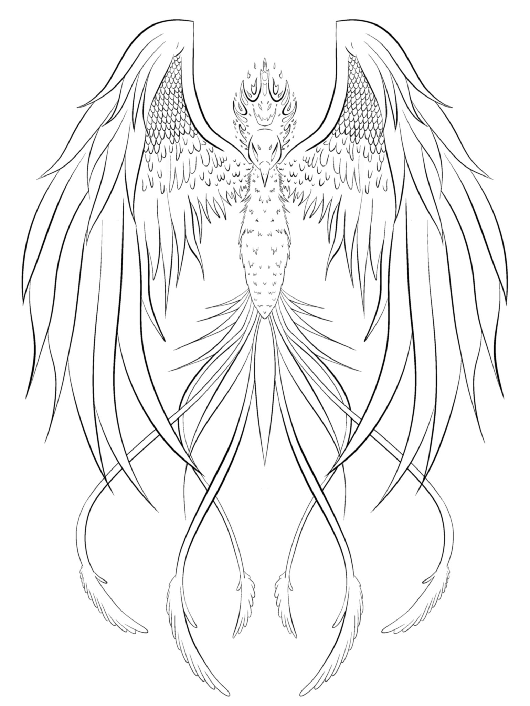

Hello, my name is Dakota Osborn and I am pursuing a degree in Software Engingeering. I partake in creating artwork outside of work and classes, as well as teaching myself new styles and methods. I hope one day to be a game designer or part of a developement team.
These are some fascinating courses I have taken at Oakland Community College.
| Course Number | Description | Links |
|---|---|---|
| CIS-1200 | This class is an ideal introduction to learning database systems, as well as working in a team environment. During this course we built a schematic of a database, based off of our personal selection, and develeoped an SQL database with a chosen group. | Link |
| CIS-1512 | This class introduces factors in developing software and challenging individuals in a diverse team enviroment. Individuals are able to select teams, as well as the general software to be developed, ideally applications to be run at a user interface on a local PC. | Link |
| CIS-2818 | This class provides a beginner level development of android applications for mobile devices. Individuals create applications through Android Studio for use via mobile phone, varying from a calculator interface to a personally developed application. | Link |